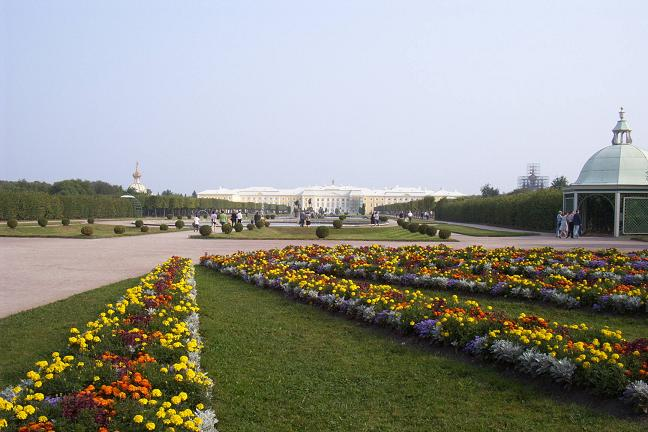
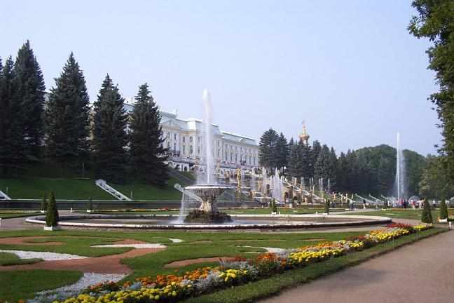
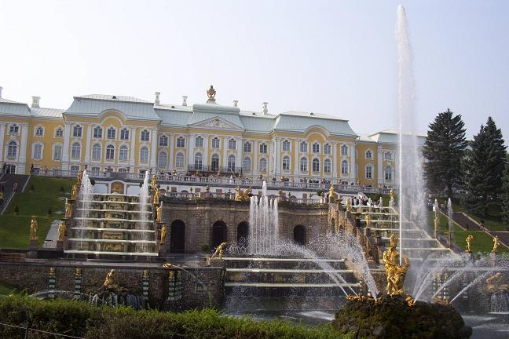
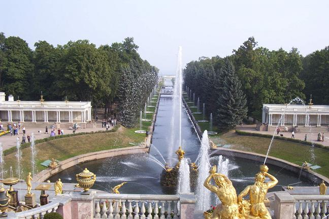

This is one of three palaces located in the outskirts of St. Petersburg, all of which were destroyed by the Germans during World War II and have since been rebuilt. Peterhof, an estate built by Peter the Great some 30km west of the city center, features beautiful grounds with over 140 fountains and canals.




Continue to Peterhof: Part 2
Back to St. Petersburg Section
Go to the Homepage